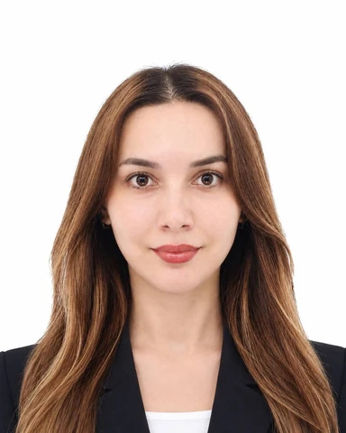

2021 — Present
TOPIK Preparation Instructor
Korean Language Education
Run TOPIK exam-preparation classes and courses to raise learners' Korean proficiency.
Multilingual Translator & Interpreter
Korean ⇄ Uzbek translator and interpreter with an MA in Korean Language & Literature, completed PhD coursework in Education, and about 15 years connecting languages and cultures.

Korean–Uzbek professional translator and interpreter (Nizomova Guldona Fakhriddin qizi) holding an MA in Korean Language & Literature and having completed doctoral coursework in Education. About 15 years of experience in education, interpreting, translation, and cultural exchange — from classrooms and TOPIK courses to legal interpreting and support for foreign residents in Seoul. Native Uzbek, fluent Korean, intermediate English and Russian — connecting languages and cultures through accurate, clear communication.
About 15 years across teaching, interpreting, and translation in Uzbekistan and South Korea.
Run TOPIK exam-preparation classes and courses to raise learners' Korean proficiency.
Professional written translation of documents and oral interpreting between Korean and Uzbek.
Interpret between Korean and Uzbek for clients of a Korean law office.
Handled counseling and client support for foreign residents.
Taught Korean language classes to learners at a language institute.
Taught English to elementary school students.
Available for translation, interpreting, and Korean-teaching projects in Korea and remotely.
ms.nizomovaguli@gmail.com다국어 번역 & 통역가
한국어 ⇄ 우즈베크어 전문 번역·통역가. 국어국문학 석사 학위를 취득하고 교육학 박사과정을 수료했으며, 약 15년간 언어와 문화를 이어 왔습니다.
한국어학 석사 학위를 취득하고 교육학과 박사 과정을 수료한 한국어–우즈베크어 전문 번역·통역가입니다. 약 15년간 교육, 통역, 번역 및 문화 교류 분야에서 경력을 쌓아 왔습니다. 우즈베크어(모국어)와 한국어에 능통하며, 영어와 러시아어는 중급 수준으로 구사합니다. 정확하고 명확한 소통으로 언어와 문화를 잇겠습니다.
우즈베키스탄과 대한민국에서 교육·통역·번역 분야 약 15년 활동.
TOPIK 시험 대비 수업 및 한국어 능력 향상을 위한 교육 진행.
한국어와 우즈베크어 간 전문적인 문서 번역 및 구두 통역 수행.
한국 법률사무소에서 한국어와 우즈베크어 통역 업무 수행.
외국인 주민 대상 상담 및 고객 응대 업무 수행.
어학원에서 한국어 교육 및 수업 진행.
초등학생 대상 영어 수업 진행.
Многоязычный переводчик & устный переводчик
Переводчик корейского ⇄ узбекского языков: магистр корейского языка и литературы, окончен курс докторантуры по педагогике, около 15 лет соединяет языки и культуры.
Профессиональный переводчик корейского и узбекского языков (Низомова Гулдона Фахриддин кизи): магистр корейского языка и литературы, окончен курс докторантуры по педагогике. Около 15 лет опыта в образовании, устном и письменном переводе и культурном обмене — от уроков и подготовки к TOPIK до юридического перевода и поддержки иностранных жителей Сеула. Узбекский — родной, корейский — свободно, английский и русский — средний уровень. Точная и ясная коммуникация, соединяющая языки и культуры.
Около 15 лет в преподавании, устном и письменном переводе в Узбекистане и Южной Корее.
Занятия по подготовке к экзамену TOPIK и повышению уровня корейского языка.
Письменный перевод документов и устный перевод между корейским и узбекским языками.
Устный перевод с корейского на узбекский и обратно для клиентов юридической фирмы.
Консультирование и работа с обращениями иностранных жителей.
Проведение занятий по корейскому языку в языковом центре.
Уроки английского языка для учеников начальной школы.
Доступна для проектов по переводу, устному переводу и преподаванию корейского в Корее и удалённо.
ms.nizomovaguli@gmail.comKo'p tilli tarjimon & og'zaki tarjimon
Koreys ⇄ o'zbek tillari bo'yicha tarjimon: koreys tili va adabiyoti magistri, pedagogika bo'yicha doktorantura kursini tamomlagan, qariyb 15 yildan beri tillar va madaniyatlarni bog'lab keladi.
Koreys–o'zbek tillari bo'yicha professional yozma va og'zaki tarjimon (Nizomova Guldona Faxriddin qizi): koreys tili va adabiyoti magistri, pedagogika bo'yicha doktorantura kursini tamomlagan. Ta'lim, og'zaki va yozma tarjima hamda madaniy almashinuv sohalarida qariyb 15 yillik tajriba — darslar va TOPIK tayyorlovidan tortib yuridik tarjima va Seuldagi chet elliklarni qo'llab-quvvatlashgacha. O'zbek tili — ona tili, koreys tilini erkin biladi, ingliz va rus tillari — o'rta daraja. Aniq va ravshan muloqot orqali tillar va madaniyatlarni bog'laydi.
O'zbekiston va Janubiy Koreyada o'qitish, og'zaki va yozma tarjima sohasida qariyb 15 yil.
TOPIK imtihoniga tayyorlov darslari va koreys tili darajasini oshirish kurslari.
Koreys va o'zbek tillari o'rtasida hujjatlarni yozma tarjima qilish va og'zaki tarjima.
Koreya yuridik idorasida koreys va o'zbek tillarida og'zaki tarjima.
Chet ellik aholiga maslahat berish va murojaatlar bilan ishlash.
Til markazida koreys tilidan dars berish.
Boshlang'ich sinf o'quvchilariga ingliz tili darslari.
Koreyada va masofadan tarjima, og'zaki tarjima va koreys tilini o'qitish loyihalariga tayyor.
ms.nizomovaguli@gmail.com